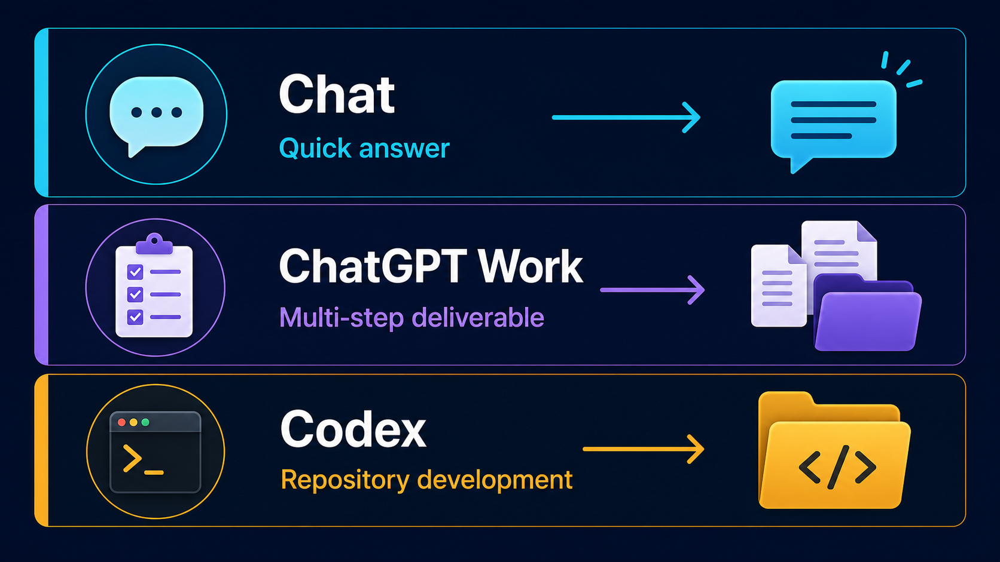
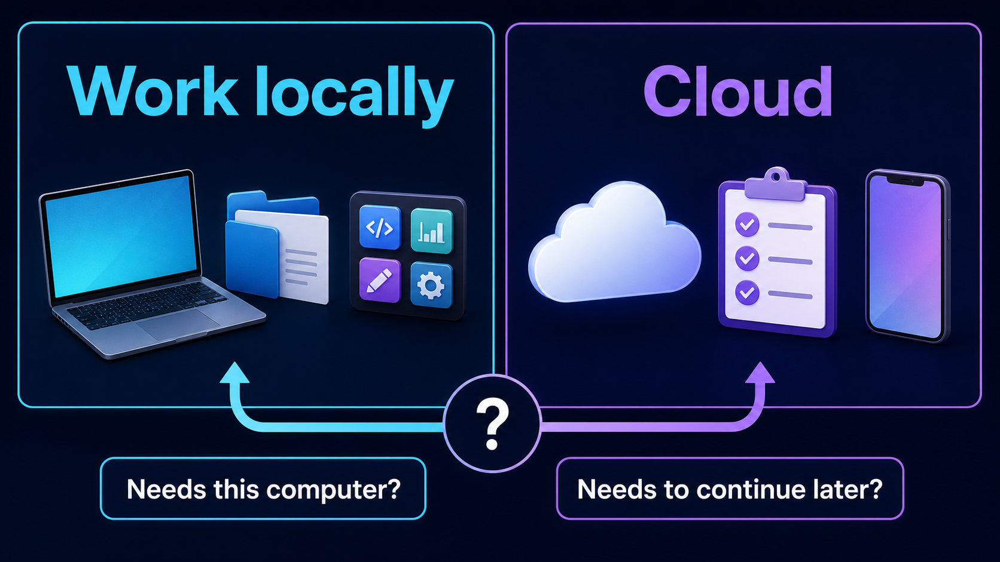
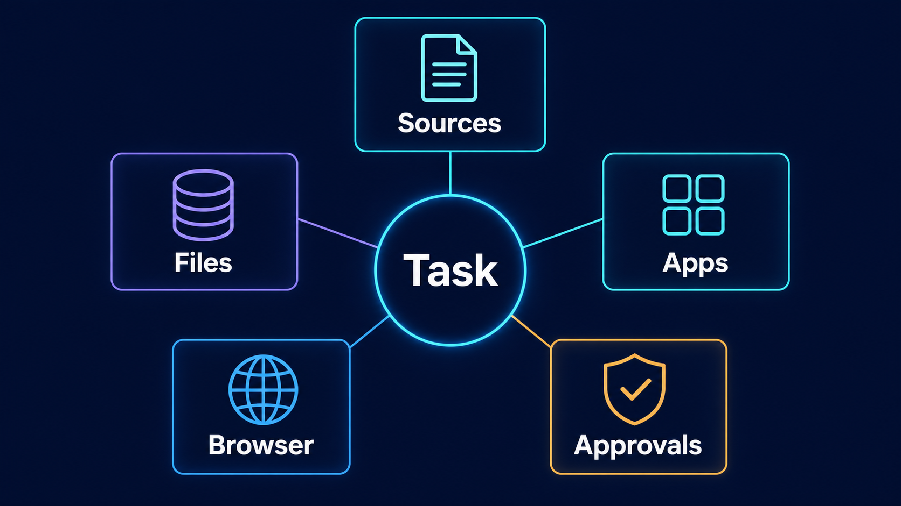
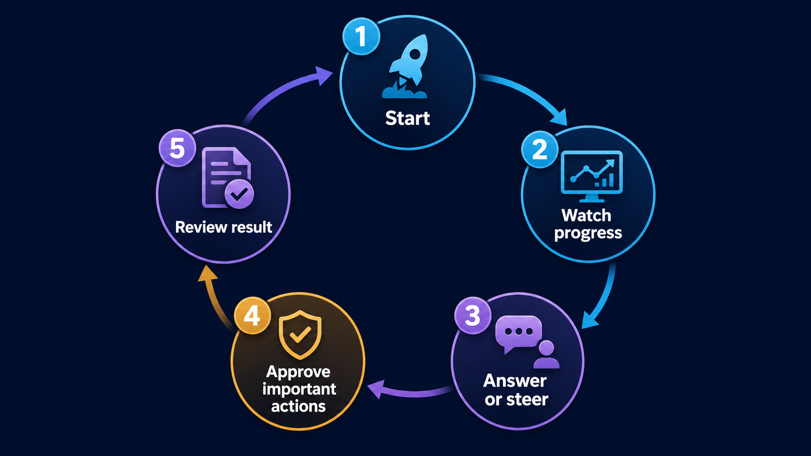

Windows 11：ChatGPT Work 與 Codex 設定指南
本指南只針對 Windows 11。先完成 ChatGPT 桌面版安裝，再依任務選擇 Chat、ChatGPT Work 或 Codex；若要處理課程 project，最後才以保守方式設定 Codex 的工作範圍與核准模式。
更新說明
Windows 11：安裝與開啟 ChatGPT Work
- 從 ChatGPT 官方下載頁安裝或更新 Windows 版 ChatGPT 桌面 app。
- 開啟 app，使用你的 ChatGPT 帳號登入；可用功能會因方案、組織設定與推出狀態而不同。
- 要做研究、分析、文件、簡報或其他多步驟成果時，先選 ChatGPT，再在新對話上方切換到 Work。
- 要處理專案資料夾、程式碼、指令或 diff 審查時，從 ChatGPT 下拉選單選 Codex。
Chat、Work 與 Codex 比較

這是教學流程圖，不是產品畫面截圖。
| 介面 | 最適合的任務 | 本機 project | 工具與審查 | 預期成果 |
|---|---|---|---|---|
| Chat | 快速問答、解釋、構想或短文草稿。 | 通常不需要。 | 以對話與快速確認為主。 | 立即可閱讀的回答或草稿。 |
| ChatGPT Work | 需要多個步驟的研究、分析、文件、簡報或可審查成果。 | 需要這台電腦的檔案或 app 時選 Work locally。 | 可使用檔案、plugin 與已核准工具；你可看進度與調整方向。 | 可重用、可審查的交付成果。 |
| Codex | 專案資料夾、程式碼、指令、驗證與可重複開發流程。 | 先選對唯一的課程 project。 | 使用權限與核准模式；重要改動先看 diff。 | 經驗證的檔案、程式碼與專案變更。 |
手機上可左右滑動比較表，保留每一欄的完整內容。
選擇執行位置

這是教學流程圖，不是產品畫面截圖。
Work locally 適合必須使用這台電腦上的檔案或 app 的任務，例如課程資料夾、瀏覽器或本機工具。Cloud 適合希望工作在電腦關閉後仍能繼續，或想在網頁與手機接續查看的任務。選擇前先問：這個任務是否真的需要這台電腦上的檔案或 app？
安全設定 Codex

這是教學流程圖，不是產品畫面截圖。
- 在 Codex 開始前，確認只選到這次課程要使用的 workspace 或 project 資料夾。
- 如果這個 project 已加入多個資料夾（multi-folder project），要逐一確認每個已加入的資料夾都在課程範圍內；Codex 可以讀取與修改每一個已加入的資料夾，不是只有主要資料夾（primary folder）。
- 先選先要求核准（Ask for approval）。它可在目前工作區內工作，想跨出範圍時會暫停讓你判斷。
- 不要預設開啟完整存取權（Full access）。它只在你了解風險且信任該 project 時才有必要。
- 把網路、瀏覽器、plugin、MCP 與外部工具視為需要理由的能力；看懂用途再核准。
- 學生姓名、學號、成績、帳號、金鑰與行政資料先限制範圍，或先做去識別化。
- 看到核准要求時先讀內容；完成後檢查 diff、輸出檔案與實際結果。
保持參與與審查

這是教學流程圖，不是產品畫面截圖。
不論使用 Work 或 Codex，都不要把任務交出去後就不再理會。你可以看進度、回答補充問題、改變方向，並在重要動作前做判斷。完成後仍要檢查結果是否符合目標、引用或資料是否正確、檔案是否放在預期位置，以及是否還需要人工修改。
課前檢查
- Windows 11 的 ChatGPT 桌面 app 已安裝或更新，且我已登入正確帳號。
- 我已選對 Chat、Work 或 Codex；需要本機檔案或 app 時，Work 選 Work locally。
- 使用 Codex 時，我已選對唯一的課程 workspace，並確認每一個已加入的資料夾（包含次要資料夾）都在允許範圍內。
- 我已使用先要求核准，沒有預設開啟完整存取權。
- 我會檢查核准要求、diff 與最後輸出結果。
參考來源
Windows 11: ChatGPT Work and Codex Setup Guide
This guide is for Windows 11 only. Install the ChatGPT desktop app first, then choose Chat, ChatGPT Work, or Codex for the task. Use the conservative Codex configuration only when you need to work in a course project.
What changed
Install on Windows 11
- Install or update the Windows ChatGPT desktop app from the official ChatGPT download page.
- Open the app and sign in with your ChatGPT account. Available features can differ by plan, organization settings, and rollout.
- For research, analysis, documents, decks, or other multi-step deliverables, select ChatGPT, then switch the new chat to Work.
- For a project folder, code, commands, or diff review, select Codex from the ChatGPT dropdown.
Compare Chat, Work, and Codex
This is a teaching workflow diagram, not an exact product screenshot.
| Surface | Ideal task | Local project | Tools and review | Expected outcome |
|---|---|---|---|---|
| Chat | Quick answers, explanations, ideas, or a short draft. | Usually not needed. | Conversation and quick confirmation. | An immediate answer or draft. |
| ChatGPT Work | Multi-step research, analysis, documents, decks, or a reviewable deliverable. | Select Work locally when the task needs files or apps on this computer. | Can use files, plugins, and approved tools; you can follow progress and steer. | A reusable, reviewable deliverable. |
| Codex | A project folder, code, commands, verification, and repeatable development. | First select the one intended course project. | Use permissions and approvals; review important diffs first. | Verified files, code, and project changes. |
On a phone, swipe the comparison table sideways to keep every column readable.
Choose where work runs
This is a teaching workflow diagram, not an exact product screenshot.
Work locally is for tasks that need files or apps on this computer, such as a course folder, browser, or local tool. Cloud is for work that should continue after the computer is unavailable or be continued from the web or a phone. Ask first: does this task truly need files or apps on this computer?
Configure Codex safely
This is a teaching workflow diagram, not an exact product screenshot.
- Before starting Codex, confirm that only the intended course workspace or project folder is selected.
- If the project has multiple attached folders (a multi-folder project), check every attached folder, not only the primary one; Codex can read and change files in every attached folder.
- Start with Ask for approval. It can work inside the current workspace and pauses when it needs to cross that boundary.
- Do not enable Full access by default. Use it only when you understand the risk and trust the project.
- Treat network access, browser use, plugins, MCP, and external tools as capabilities that need a reason; understand the purpose before approving them.
- Keep student names, IDs, grades, accounts, keys, and administrative data in a narrow boundary or de-identify them first.
- Read every approval request; then review diffs, output files, and the real result.
Stay in the loop
This is a teaching workflow diagram, not an exact product screenshot.
Neither Work nor Codex means handing off a task and walking away. Follow progress, answer questions, change direction, and make decisions before important actions. When the work is complete, still check whether it meets the goal, uses the right sources, stores files in the expected place, and needs a human revision.
Before you begin
- The Windows 11 ChatGPT desktop app is installed or updated, and I am signed in to the right account.
- I selected Chat, Work, or Codex for the task; choose Work locally when it needs local files or apps.
- For Codex, I selected only the intended course workspace, and confirmed every attached folder (including secondary folders) is within the intended scope.
- I am using Ask for approval and have not enabled Full access by default.
- I will inspect approval requests, diffs, and the final output.